- contact@centredudos.ch
- Avenue de Savoie 10 - 1003 Lausanne
- Avenue Jomini 8 - 1004 Lausanne
QU'EST-CE QUE LA PHYSIOTHERAPIE ?
La physiothérapie est une approche thérapeutique fondée sur le mouvement visant à restaurer, maintenir et améliorer la fonction physique et la qualité de vie des patients. Elle repose sur une compréhension approfondie du fonctionnement du corps humain et s’appuie sur des méthodes actives (exercices, rééducation) et passives (thérapie manuelle, mobilisations) pour traiter une grande variété de troubles. La physiothérapie met l’accent sur la prévention, la récupération et l’autonomisation du patient.
Cette discipline s’adresse aux personnes de tout âge, souffrant de douleurs, de limitations fonctionnelles ou de troubles musculosquelettiques, neurologiques, respiratoires ou cardiaques. Elle intervient aussi bien en phase aiguë qu’en rééducation à long terme, et peut compléter d’autres traitements médicaux.
Lors de la première séance, le physiothérapeute évalue votre situation afin d’établir un plan de traitement personnalisé, en lien avec vos objectifs. Tout au long du suivi, cette problématique est régulièrement réévaluée, ce qui permet d’ajuster le traitement de manière ciblée et d’optimiser les résultats au fil des séances.
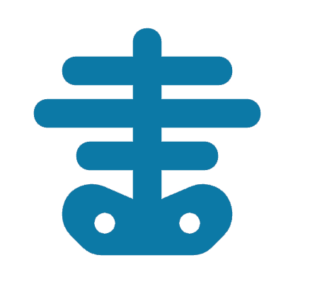
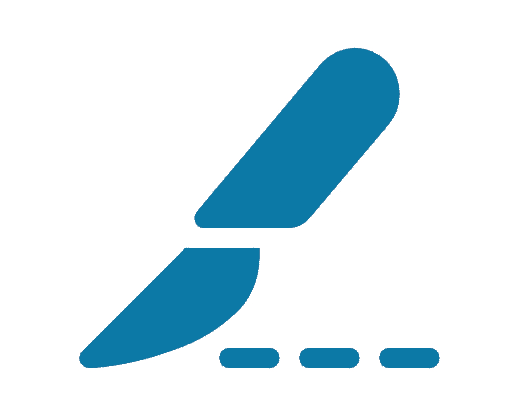
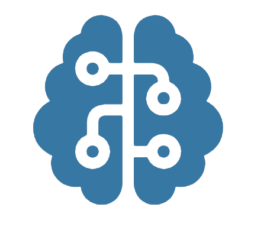
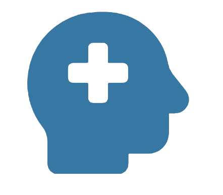
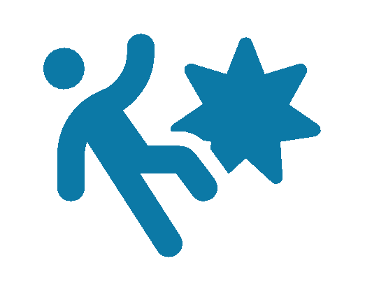
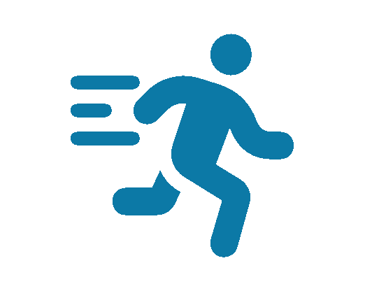
NOS TECHNIQUES
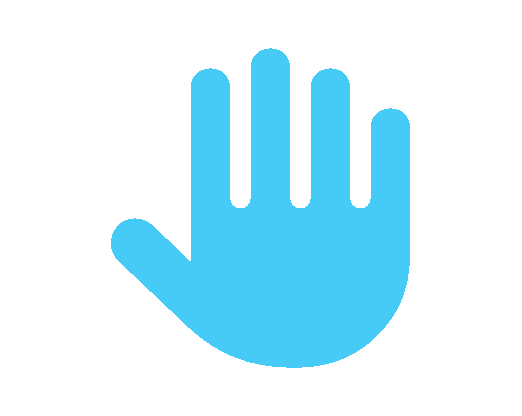
Thérapie manuelle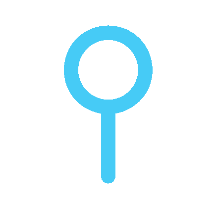
Dry Needling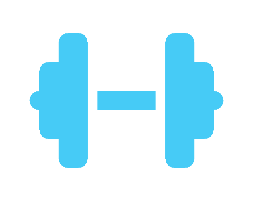
Renforcement musculaire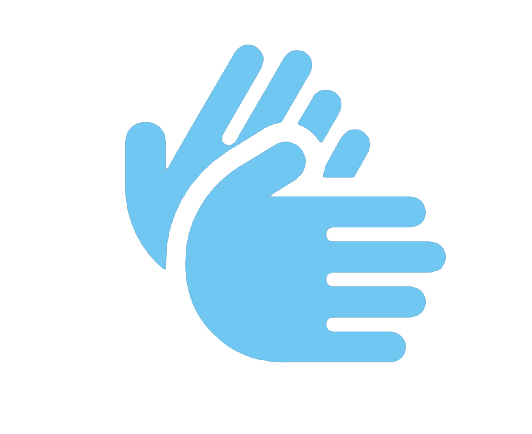
Etirement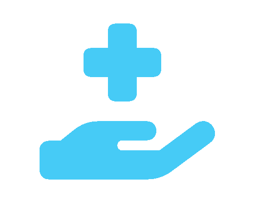
Fasciathérapie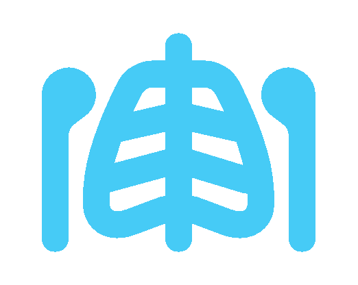
Mobilisation articulaire
La thérapie manuelle est une approche spécialisée de la physiothérapie, basée sur des techniques précises de mobilisation et de manipulation des articulations, muscles et tissus mous. Elle vise à restaurer la mobilité, réduire la douleur et améliorer la fonction corporelle. Nos physiothérapeutes utilisent cette méthode pour traiter efficacement les troubles musculosquelettiques, notamment les douleurs vertébrales et articulaires, dans le cadre d’une prise en charge globale et individualisée.

Le dry needling est une technique de physiothérapie qui consiste à insérer de fines aiguilles stériles dans les points trigger musculaires, afin de relâcher les tensions profondes, réduire la douleur et améliorer la fonction musculaire. Contrairement à l’acupuncture traditionnelle, cette approche est fondée sur des principes neuro-musculosquelettiques modernes. Elle est particulièrement efficace dans le traitement des douleurs chroniques, des troubles myofasciaux et des limitations de mobilité.

Le renforcement musculaire est une composante essentielle de la rééducation en physiothérapie. Il permet de stabiliser les articulations, prévenir les récidives de blessures et améliorer la posture ainsi que les performances fonctionnelles. Grâce à des exercices ciblés et progressifs, nos physiothérapeutes accompagnent chaque patient dans le développement d’une musculature adaptée à ses besoins, que ce soit après une chirurgie, un épisode douloureux ou dans un objectif de prévention à long terme.

Les étirements font partie intégrante de la prise en charge physiothérapeutique. Ils permettent d’améliorer la souplesse musculaire, de restaurer l’amplitude articulaire et de réduire les tensions accumulées. Utilisés de manière ciblée, les étirements contribuent à soulager la douleur, prévenir les blessures et favoriser une meilleure posture. Nos thérapeutes les intègrent dans un programme personnalisé, en fonction des besoins spécifiques de chaque patient.
La fasciathérapie est une méthode douce et manuelle qui vise à libérer les tensions des fascias, ces fines membranes qui enveloppent les muscles, organes et structures du corps. En agissant sur ces tissus conjonctifs, la fasciathérapie permet de restaurer l’équilibre global du corps, de soulager les douleurs chroniques et de favoriser une détente profonde. Cette approche est particulièrement indiquée en cas de troubles musculosquelettiques, de stress ou de douleurs persistantes mal expliquées.

La mobilisation articulaire est une technique manuelle utilisée en physiothérapie pour restaurer la mobilité et la fonction des articulations. Par des mouvements doux, contrôlés et progressifs, le thérapeute agit directement sur l’articulation afin de réduire les raideurs, améliorer l’amplitude de mouvement et soulager la douleur. Elle est particulièrement utile après un traumatisme, une chirurgie ou en cas d’arthrose, et s’intègre dans une prise en charge personnalisée visant à optimiser les capacités fonctionnelles du patient.

Chaque patient est unique, c’est pourquoi nos physiothérapeutes élaborent un programme de traitement individualisé, adapté aux besoins spécifiques de chacun. Ce programme tient compte de la pathologie, du mode de vie, des objectifs personnels et de l’évolution clinique. Il peut inclure des techniques variées telles que la thérapie manuelle, le renforcement musculaire, les étirements, le dry needling ou encore la mobilisation articulaire. L’approche personnalisée vise à optimiser les résultats, accélérer la récupération et prévenir les récidives dans une logique de soin globale et durable.
Au sein du neurocentre, Les médecins et les thérapeutes travaillent ensemble dans l’interdisciplinarité afin de réaliser un suivi complet et simplifié pour vous. Lors de vos séances de physiothérapie, le traitement est personnalisé selon vos besoins et vos objectifs.
INFOS PRATIQUES ET CONSEILS